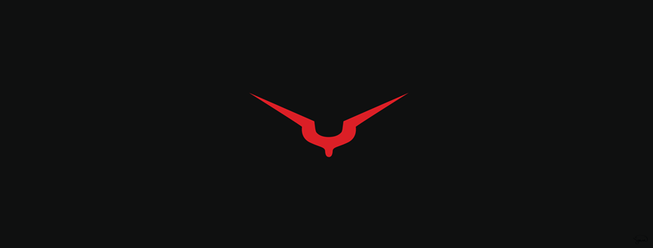
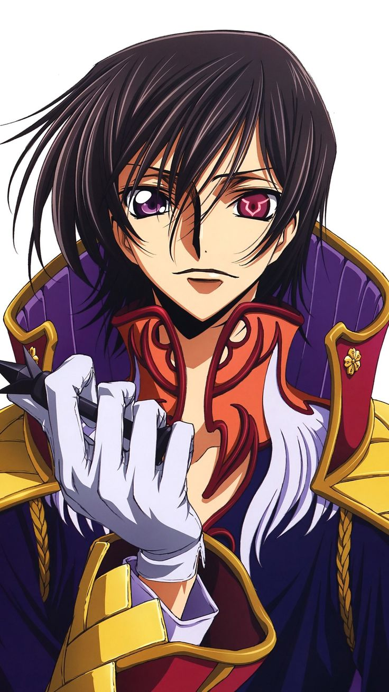
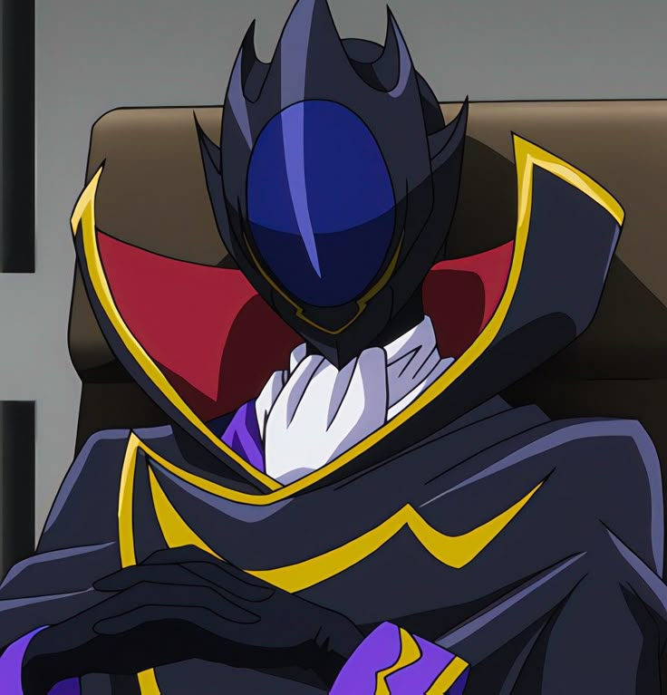

Lelouch vi Britannia, whose alias is Lelouch Lamperouge, is the main protagonist of the Sunrise anime series Code Geass: Lelouch of the Rebellion.
In the series, Lelouch is a former prince from the superpower Britannia who is given the power of the "Geass" by a witch known as C.C.

"Zero" is the leader of the Black Knights.